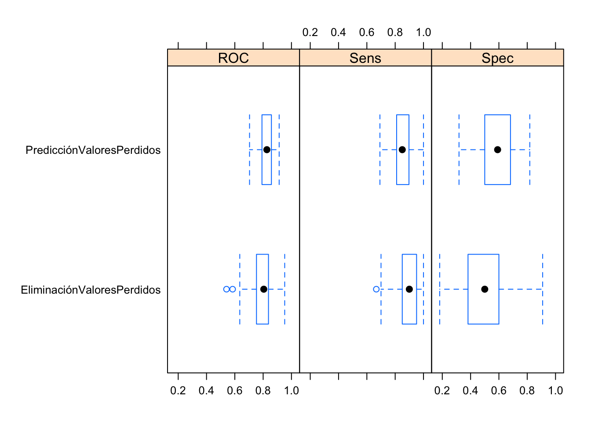

Clasificación
joseangeldiazg
4/1/2018
5 Clasificación
En este punto, aplicaremos técnicas de clasificación en el dataset pima, que hemos estudiado y procesado en el punto 3, de análisis exploratorio de datos. Nuestro problema, pasará por tanto en predecir, la diabetes sobre nuestro dataset, en función de las variables estudiadas anteriormente y usando las siguientes técnicas:
- Utilizar el algoritmo k-NN probando con diferentes valores de k. Elegir el que mejor se considere para el problema.
- Utilizar el algoritmo LDA para clasificar.
- Utilizar el algoritmo QDA para clasificar.
- Comparar los resultados de los tres algoritmos.
El primer paso será por tanto, obtener un conjunto de test y otro de entrenamiento sobre el dataset, aunque en el dataset no hemos apreciado ninguna coherencia en su ordenación, igualmente, aplicaremos sufffle, ya que como estámos ante un problema no balanceado, si no lo hacemos podemos encontrarnos con que sin querer hemos acentuado este problema.
n <- nrow(pima)
shuffled_pima<- pima[sample(n), ]
train_indices <- 1:round(0.8 * n)
train <- shuffled_pima[train_indices, ]
test_indices <- (round(0.8 * n) + 1):n
test <- shuffled_pima[test_indices, ]
str(train)## 'data.frame': 614 obs. of 9 variables:
## $ Preg : num 0.3529 0.1765 0.1765 0.0588 0.4706 ...
## $ Plas : num 0.348 0.232 0.4 0.677 0.639 ...
## $ Pres : num 0.347 0.592 0.306 0.449 0.429 ...
## $ Skin : num 0.283 0.261 0.152 0.239 0.261 ...
## $ Insu : num 0.2115 0.0673 0.1731 0.1358 0.0986 ...
## $ Mass : num 0.323 0.327 0.26 0.227 0.342 ...
## $ Pedi : num 0.1503 0.5184 0.0914 0.1157 0.0218 ...
## $ Age : num 0.367 0.1 0.05 0.35 0.333 ...
## $ Class: num 0 1 0 1 1 0 0 0 0 0 ...str(test)## 'data.frame': 153 obs. of 9 variables:
## $ Preg : num 0.118 0.412 0.294 0.294 0.235 ...
## $ Plas : num 0.31 0.8 0.394 0.6 0.665 ...
## $ Pres : num 0.286 0.653 0.49 0.857 0.51 ...
## $ Skin : num 0.196 0.38 0.239 0.435 0.196 ...
## $ Insu : num 0.0745 0.369 0.3738 0.6791 0.3353 ...
## $ Mass : num 0.243 0.409 0.382 0.626 0.342 ...
## $ Pedi : num 0.0269 0.3027 0.0346 0.0636 0.1311 ...
## $ Age : num 0.0167 0.3167 0.1167 0.2667 0.15 ...
## $ Class: num 0 1 0 1 0 0 0 0 1 0 ...En este punto, volveremos a usar un gráfico de barras e histogramas para ver si nuestra division ha sido apropiada.
par(mfrow = c(1, 2))
barplot(table(train$Class), main = "Train Class Distribution")
barplot(table(test$Class), main = "Test Class Distribution")Vemos como se han dividido bastante bien y no hemos acentuado el problema. Ahora podemos empezar a aplicar técnicas de clasificación, para ello, nos basaremos en el paquete caret.
5.1 Clasificación con KNN
Al usar este algoritmo uno de los pasos mas complicados es la elección del valor de k apropiado para nuestro modelo. Por suerte, caret, incluye la opción del parámetro tuneGrid con el que podemos comparara varios valores de k para nuestro modelo y coger automaticamente el mejor. Igualmente, realizaremos un estudio basado en gráficos para ver como se comporta el valor de K, para ello, lo variaremos entre 1 y 20. ``
control <- trainControl(method="repeatedcv", number=10, repeats=10)
x<-train[,-9]
y<-train[,9]
y=as.factor(y)
knnModelk1 <- train(x, y, method = "knn", trControl=control, tuneGrid = data.frame(.k=1))
knnModelk2 <- train(x, y, method = "knn", trControl=control, tuneGrid = data.frame(.k=2))
knnModelk3 <- train(x, y, method = "knn", trControl=control, tuneGrid = data.frame(.k=3))
knnModelk4 <- train(x, y, method = "knn", trControl=control, tuneGrid = data.frame(.k=4))
knnModelk5 <- train(x, y, method = "knn", trControl=control, tuneGrid = data.frame(.k=5))
knnModelk6 <- train(x, y, method = "knn", trControl=control, tuneGrid = data.frame(.k=6))
knnModelk7 <- train(x, y, method = "knn", trControl=control, tuneGrid = data.frame(.k=7))
knnModelk8 <- train(x, y, method = "knn", trControl=control, tuneGrid = data.frame(.k=8))
knnModelk9 <- train(x, y, method = "knn", trControl=control, tuneGrid = data.frame(.k=9))
knnModelk10 <- train(x, y, method = "knn", trControl=control, tuneGrid = data.frame(.k=10))
knnModelk11 <- train(x, y, method = "knn", trControl=control, tuneGrid = data.frame(.k=11))
knnModelk12 <- train(x, y, method = "knn", trControl=control, tuneGrid = data.frame(.k=12))
knnModelk13 <- train(x, y, method = "knn", trControl=control, tuneGrid = data.frame(.k=13))
knnModelk14 <- train(x, y, method = "knn", trControl=control, tuneGrid = data.frame(.k=14))
knnModelk15 <- train(x, y, method = "knn", trControl=control, tuneGrid = data.frame(.k=15))
knnModelk16 <- train(x, y, method = "knn", trControl=control, tuneGrid = data.frame(.k=16))
knnModelk17 <- train(x, y, method = "knn", trControl=control, tuneGrid = data.frame(.k=17))
knnModelk18 <- train(x, y, method = "knn", trControl=control, tuneGrid = data.frame(.k=18))
knnModelk19 <- train(x, y, method = "knn", trControl=control, tuneGrid = data.frame(.k=19))
knnModelk20 <- train(x, y, method = "knn", trControl=control, tuneGrid = data.frame(.k=20))Comparamos ahora estadisticamente los resultados para ver cual se ha comportado mejor en las iteraciones del modelo.
results <- resamples(list(K1=knnModelk1, K2=knnModelk2,K3=knnModelk3, K4=knnModelk4, K5=knnModelk5, K6=knnModelk6,K7=knnModelk7, K8=knnModelk8, K9=knnModelk9, K10=knnModelk10, K11=knnModelk11, K12=knnModelk12, K13=knnModelk13, K14=knnModelk14, K15=knnModelk15, K16=knnModelk16, K17=knnModelk17, K18=knnModelk18, K19=knnModelk19, K20=knnModelk20))
summary(results)##
## Call:
## summary.resamples(object = results)
##
## Models: K1, K2, K3, K4, K5, K6, K7, K8, K9, K10, K11, K12, K13, K14, K15, K16, K17, K18, K19, K20
## Number of resamples: 100
##
## Accuracy
## Min. 1st Qu. Median Mean 3rd Qu. Max. NA's
## K1 0.5245902 0.6451613 0.6721311 0.6727004 0.7096774 0.7903226 0
## K2 0.5081967 0.6451613 0.6910365 0.6850362 0.7258065 0.8225806 0
## K3 0.5573770 0.6812596 0.7049180 0.7119431 0.7480484 0.8196721 0
## K4 0.5645161 0.6612903 0.7016654 0.7001888 0.7419355 0.8196721 0
## K5 0.6065574 0.7049180 0.7258065 0.7296608 0.7704918 0.8387097 0
## K6 0.6065574 0.6870284 0.7213115 0.7268374 0.7580645 0.8524590 0
## K7 0.6290323 0.6885246 0.7258065 0.7318165 0.7714172 0.9193548 0
## K8 0.6229508 0.6922924 0.7339318 0.7257224 0.7590246 0.8064516 0
## K9 0.6065574 0.7049180 0.7377049 0.7359330 0.7704918 0.9032258 0
## K10 0.6229508 0.7049180 0.7279826 0.7338897 0.7640515 0.8524590 0
## K11 0.6451613 0.7020756 0.7377049 0.7361528 0.7704918 0.8387097 0
## K12 0.6229508 0.7049180 0.7377049 0.7364727 0.7714172 0.8852459 0
## K13 0.5737705 0.7096774 0.7419355 0.7487301 0.7903226 0.9016393 0
## K14 0.6129032 0.7213115 0.7540984 0.7538375 0.7903226 0.8524590 0
## K15 0.6229508 0.7213115 0.7580645 0.7571417 0.7877446 0.8548387 0
## K16 0.6557377 0.7213115 0.7560814 0.7557416 0.7903226 0.8688525 0
## K17 0.6393443 0.7213115 0.7540984 0.7558201 0.7903226 0.9180328 0
## K18 0.6129032 0.7131336 0.7580645 0.7522909 0.7903226 0.8387097 0
## K19 0.6290323 0.7213115 0.7540984 0.7544615 0.7868852 0.8524590 0
## K20 0.6393443 0.7246827 0.7540984 0.7571826 0.8032787 0.8524590 0
##
## Kappa
## Min. 1st Qu. Median Mean 3rd Qu. Max. NA's
## K1 -0.006960557 0.2197566 0.2869680 0.2945266 0.3780996 0.5556781 0
## K2 -0.110436893 0.2386866 0.3278364 0.3124525 0.3974336 0.6084960 0
## K3 0.049624928 0.2872304 0.3506319 0.3665529 0.4504505 0.6128102 0
## K4 0.112407211 0.2615745 0.3363002 0.3474281 0.4275364 0.6050618 0
## K5 0.129607610 0.3374578 0.3939246 0.4054286 0.4817961 0.6477273 0
## K6 0.146853147 0.3007956 0.3956053 0.3965197 0.4831768 0.6702703 0
## K7 0.155940594 0.3095768 0.4071991 0.4081957 0.5003898 0.8220436 0
## K8 0.174334140 0.3165552 0.4046913 0.3914837 0.4711633 0.5777526 0
## K9 0.146853147 0.3316321 0.4197384 0.4148903 0.5026092 0.7809187 0
## K10 0.139791539 0.3402248 0.4097607 0.4084947 0.4818904 0.6702703 0
## K11 0.174334140 0.3242829 0.4044074 0.4108683 0.4922711 0.6373365 0
## K12 0.139791539 0.3244552 0.4245940 0.4136000 0.4923639 0.7381974 0
## K13 -0.025873221 0.3631803 0.4291431 0.4384173 0.5371250 0.7867133 0
## K14 0.099273608 0.3667285 0.4504505 0.4491147 0.5428384 0.6893039 0
## K15 0.202140309 0.3938786 0.4614479 0.4579646 0.5332549 0.6923925 0
## K16 0.197871008 0.3641937 0.4661309 0.4528545 0.5246802 0.7038835 0
## K17 0.185679612 0.3666817 0.4548652 0.4542268 0.5424120 0.8204826 0
## K18 0.187772926 0.3660201 0.4637894 0.4446257 0.5237237 0.6547884 0
## K19 0.146107784 0.3681240 0.4504505 0.4492924 0.5342695 0.6633967 0
## K20 0.202140309 0.3722394 0.4404275 0.4527710 0.5488076 0.6633967 0Al ser tantos modelos entrenados, será mejor usar una representación gráfica para ver el comportamiento de los distintos valores de K.
bwplot(results)Parece ser que K=12 o K=9 tienen buenos resultados, y que los modelos no tienen demasiados outliers ni por encima ni por debabajo, al menos en la evaluación basada en Accuracy, distribuyendose los resultados de una manera bastante homogénea. De igual manera, echa esta comparación entre valores de K, a la hora de entrenar nuestro modelo, dejaremos la seleccion de este valor al parámetro tuneGrid.
control <- trainControl(method="cv")
knnFinalModel <- train(x, y, method="knn", metric="Accuracy", trControl=control,tuneGrid = data.frame(.k=1:20))
knnFinalModel## k-Nearest Neighbors
##
## 614 samples
## 8 predictor
## 2 classes: '0', '1'
##
## No pre-processing
## Resampling: Cross-Validated (10 fold)
## Summary of sample sizes: 553, 552, 552, 553, 552, 553, ...
## Resampling results across tuning parameters:
##
## k Accuracy Kappa
## 1 0.6726600 0.2898571
## 2 0.6579323 0.2550165
## 3 0.7053146 0.3519647
## 4 0.7020095 0.3487034
## 5 0.7377578 0.4251507
## 6 0.7182708 0.3750970
## 7 0.7296668 0.4025292
## 8 0.7345584 0.4133429
## 9 0.7247488 0.3945716
## 10 0.7296933 0.4043669
## 11 0.7231095 0.3861691
## 12 0.7296668 0.3967240
## 13 0.7410629 0.4237763
## 14 0.7491803 0.4427517
## 15 0.7523268 0.4484121
## 16 0.7539397 0.4528354
## 17 0.7459545 0.4332421
## 18 0.7409836 0.4223138
## 19 0.7507139 0.4421237
## 20 0.7442887 0.4265961
##
## Accuracy was used to select the optimal model using the largest value.
## The final value used for the model was k = 16.Vemos como el valor de K escogido por el algorítmo es 11, muy similar a los que habíamos predicho en el proceso de comparación del mejor valor de K.
Llegados a este punto solo nos quedará usar el conjunto de test para predecir el funcionamiento del modelo creado.
knnPred <- predict(knnFinalModel, newdata = test)
postResample(pred = knnPred, obs = as.factor(test[,9]))## Accuracy Kappa
## 0.7973856 0.5326633Al finalizar nuestro proceso obtenemos un 0.6797386 de accuracy en test, sin duda podría mejorarse aplicando técnicas de imbalance learning o técnicas más robustas de clasificación que el algoritmo KNN, aunque esto lo dejaremos para trabajos futuros. En este punto, retomaremos la partición en la que obviamos todos los **valores perdidos^* para comprobar el el funcionamiento de la predicción de estos.
Vamos a realizar por tanto el proceso de clasificación basado en KNN con el dataset pimacopy que tan solo 392 observaciones pero sin valores perdidos y todos los datos son reales, es decir, no hemos realizado predicción de los mismos.
#Dividimos en test y training
n <- nrow(pimacopy)
shuffled_pima<- pimacopy[sample(n), ]
train_indices <- 1:round(0.8 * n)
trainCopy <- shuffled_pima[train_indices, ]
test_indices <- (round(0.8 * n) + 1):n
testCopy <- shuffled_pima[test_indices, ]
str(trainCopy)## 'data.frame': 314 obs. of 9 variables:
## $ Preg : num 5 2 1 4 5 13 0 8 7 2 ...
## $ Plas : int 189 108 118 103 105 152 165 179 97 105 ...
## $ Pres : int 64 62 58 60 72 90 90 72 76 58 ...
## $ Skin : int 33 32 36 33 29 33 33 42 32 40 ...
## $ Insu : int 325 56 94 192 325 29 680 130 91 94 ...
## $ Mass : num 31.2 25.2 33.3 24 36.9 26.8 52.3 32.7 40.9 34.9 ...
## $ Pedi : num 0.583 0.128 0.261 0.966 0.159 0.731 0.427 0.719 0.871 0.225 ...
## $ Age : int 29 21 23 33 28 43 23 36 32 25 ...
## $ Class: num 1 0 0 0 0 1 0 1 1 0 ...str(testCopy)## 'data.frame': 78 obs. of 9 variables:
## $ Preg : num 8 2 4 1 1 1 2 6 1 1 ...
## $ Plas : int 126 106 110 109 130 140 94 151 130 117 ...
## $ Pres : int 74 64 76 38 70 74 76 62 60 60 ...
## $ Skin : int 38 35 20 18 13 26 18 31 23 23 ...
## $ Insu : int 75 119 100 120 105 180 66 120 170 106 ...
## $ Mass : num 25.9 30.5 28.4 23.1 25.9 24.1 31.6 35.5 28.6 33.8 ...
## $ Pedi : num 0.162 1.4 0.118 0.407 0.472 0.828 0.649 0.692 0.692 0.466 ...
## $ Age : int 39 34 27 26 22 23 23 28 21 27 ...
## $ Class: num 0 0 0 0 0 0 0 0 0 0 ...#Configuramos variables para el modelo
control <- trainControl(method="cv")
x<-trainCopy[,-9]
y<-trainCopy[,9]
y=as.factor(y)
#Entrenamos el modelo
knnFinalModel <- train(x, y, method="knn", metric="Accuracy", trControl=control,tuneGrid = data.frame(.k=1:20))
knnFinalModel## k-Nearest Neighbors
##
## 314 samples
## 8 predictor
## 2 classes: '0', '1'
##
## No pre-processing
## Resampling: Cross-Validated (10 fold)
## Summary of sample sizes: 282, 282, 283, 282, 282, 282, ...
## Resampling results across tuning parameters:
##
## k Accuracy Kappa
## 1 0.7010954 0.3257541
## 2 0.6604637 0.2485981
## 3 0.7147312 0.3358018
## 4 0.7146304 0.3603786
## 5 0.7359879 0.3847008
## 6 0.7490121 0.4129019
## 7 0.7483871 0.4163602
## 8 0.7325605 0.3848531
## 9 0.7352688 0.3865003
## 10 0.7322446 0.3883375
## 11 0.7513105 0.4253029
## 12 0.7294355 0.3704065
## 13 0.7484946 0.4145716
## 14 0.7616062 0.4431784
## 15 0.7426478 0.3987486
## 16 0.7454570 0.4022685
## 17 0.7455645 0.3946863
## 18 0.7425403 0.3852677
## 19 0.7580578 0.4282836
## 20 0.7452487 0.3983555
##
## Accuracy was used to select the optimal model using the largest value.
## The final value used for the model was k = 14.knnPred <- predict(knnFinalModel, newdata = testCopy)
postResample(pred = knnPred, obs = as.factor(testCopy[,9]))## Accuracy Kappa
## 0.7435897 0.3673966Parece que obtenemos mejores resultados de lo esperado por lo que vamos a indagar más y cambiaremos la evaluación de los dos modelos a evaluación ROC menos sensitiba a los sesgos en problemas no balanceados. Pasaremos a evaluar estos dos modelos basandonos en el área bajo la curva ROC.
control <- trainControl(method="repeatedcv", number=10, repeats=10, classProbs = TRUE, summaryFunction=twoClassSummary)
#Configuramos variables para el modelo
x<-train[,-9]
y<-train[,9]
y=as.factor(y)
levels(y)<-c("X0","X1")
x2<-trainCopy[,-9]
y2<-trainCopy[,9]
y2=as.factor(y2)
levels(y2)<-c("X0","X1")
#Entrenamos los modelos
knnFinalModelPrediccionMV <- train(x, y, method="knn", metric="ROC", trControl=control, tuneGrid = data.frame(.k=1:20))
knnFinalModelEliminacionMV <- train(x2, y2, method="knn", metric="ROC", trControl=control, tuneGrid = data.frame(.k=1:20))
#Los comparamos
results <- resamples(list(PredicciónValoresPerdidos=knnFinalModelPrediccionMV, EliminaciónValoresPerdidos=knnFinalModelEliminacionMV))
summary(results)##
## Call:
## summary.resamples(object = results)
##
## Models: PredicciónValoresPerdidos, EliminaciónValoresPerdidos
## Number of resamples: 100
##
## ROC
## Min. 1st Qu. Median Mean
## PredicciónValoresPerdidos 0.7039627 0.7924521 0.8263403 0.8246562
## EliminaciónValoresPerdidos 0.5411255 0.7538420 0.8045455 0.7949983
## 3rd Qu. Max. NA's
## PredicciónValoresPerdidos 0.8575175 0.9131702 0
## EliminaciónValoresPerdidos 0.8365801 0.9522727 0
##
## Sens
## Min. 1st Qu. Median Mean 3rd Qu.
## PredicciónValoresPerdidos 0.6923077 0.8153846 0.85 0.8508718 0.8974359
## EliminaciónValoresPerdidos 0.6666667 0.8500000 0.90 0.8844286 0.9505952
## Max. NA's
## PredicciónValoresPerdidos 1 0
## EliminaciónValoresPerdidos 1 0
##
## Spec
## Min. 1st Qu. Median Mean
## PredicciónValoresPerdidos 0.3181818 0.5000000 0.5909091 0.5932806
## EliminaciónValoresPerdidos 0.1818182 0.3909091 0.5000000 0.4949091
## 3rd Qu. Max. NA's
## PredicciónValoresPerdidos 0.6818182 0.8181818 0
## EliminaciónValoresPerdidos 0.6000000 0.9090909 0bwplot(results)
Vemos como estábamos en lo acertado, y si nos basamos en la evaluación ROC, nuestro proceso de predicción de valores perdidos ha funcionado bastante bien, frente a la eliminación de los mismos. Los buenos resultados obtenidos en por el modelo knn usando solo los 392 muestras sin ningun valor perdido seguramente estén debidos a que la proporción de la clase mayoritaria en test sea alta en relación a la minoritaria y por tanto la evaluación basada en accuracy no es la más apropiada.
5.2 LDA
En este punto vamos a estudiar el método de clasificación LDA. Para ello primero tenemos que comprobar ciertas premisas necesarias para el LDA:
- La muestra es aleatoria: Esto lo damos por hecho.
- Cada variable predictora está distribuida normalmente.
- Las variables predictoras tienen varianza común.
Para comprobar si están distribuidas normalmente usaremos el test de Shapiro-Wilk. Aunque en nuestro proceso de EDA ya tuvimos en cuenta la distribución de las variables, ahora, lo comprobaremos de nuevo.
library(MASS)
library(ISLR)
shapiro.test(pima$Preg)##
## Shapiro-Wilk normality test
##
## data: pima$Preg
## W = 0.90481, p-value < 2.2e-16shapiro.test(pima$Plas)##
## Shapiro-Wilk normality test
##
## data: pima$Plas
## W = 0.96921, p-value = 1.245e-11shapiro.test(pima$Pres)##
## Shapiro-Wilk normality test
##
## data: pima$Pres
## W = 0.99091, p-value = 0.0001138shapiro.test(pima$Skin)##
## Shapiro-Wilk normality test
##
## data: pima$Skin
## W = 0.97371, p-value = 1.621e-10shapiro.test(pima$Insu)##
## Shapiro-Wilk normality test
##
## data: pima$Insu
## W = 0.82954, p-value < 2.2e-16shapiro.test(pima$Mass)##
## Shapiro-Wilk normality test
##
## data: pima$Mass
## W = 0.97912, p-value = 5.236e-09shapiro.test(pima$Pedi)##
## Shapiro-Wilk normality test
##
## data: pima$Pedi
## W = 0.8368, p-value < 2.2e-16Los altos valores de W, nos llevan a confirmar la hipótesis de partida del test en la que se considerán los datos distribuidos normalmente. Vamos a confirmarlo usándo los QQ-Plot.
qqnorm(y=pima$Preg)
qqline(y=pima$Preg)qqnorm(y=pima$Plas)
qqline(y=pima$Plas)qqnorm(y=pima$Pres)
qqline(y=pima$Pres)qqnorm(y=pima$Skin)
qqline(y=pima$Skin)qqnorm(y=pima$Insu)
qqline(y=pima$Insu)qqnorm(y=pima$Mass)
qqline(y=pima$Mass)Vemos como el único gráfico que se desbia en cierta manera es el de la variable insulina, que fue el que menos valor nos dio en el test de Shapiro-Wilk. Algo que tampoco debería de parecernos fuera de lo normal, ya que tenemos entre manos un problema de predicción de diabetes y la insulina es un factor clave en esta, al menos en su tipo-1 (donde no se produce insulina) y en su tipo-2 (donde se produce insulina pero los organos Diana no son capaces de utilizarla), por lo que puede preveerse y admitirse ciertos valores discordantes en esta variable.
Por último comparamos que las variables predictoras tienen varianza común.
boxplot(pima[,1:8])var(pima$Preg)## [1] 0.03887224var(pima$Plas)## [1] 0.03884642var(pima$Pres)## [1] 0.01585705var(pima$Skin)## [1] 0.01217326var(pima$Insu)## [1] 0.01589325var(pima$Mass)## [1] 0.02005927var(pima$Pedi)## [1] 0.0200245var(pima$Age)## [1] 0.03845944Aquí podemos tener cierto problema, ya que aunque son varianzas similares, tenemos algunas bastante distintas entre otras. Igualmente, en gran medida pueden confirmarse las premisas de LDA y aplicaremos el método normalmente.
lda.fit <- lda(Class~.,data=train)
lda.fit## Call:
## lda(Class ~ ., data = train)
##
## Prior probabilities of groups:
## 0 1
## 0.6400651 0.3599349
##
## Group means:
## Preg Plas Pres Skin Insu Mass Pedi
## 0 0.1894926 0.4304359 0.4788648 0.2159254 0.1354717 0.2621021 0.1521720
## 1 0.2786798 0.6305649 0.5199926 0.2669191 0.2071441 0.3512941 0.2027756
## Age
## 0 0.1722222
## 1 0.2579186
##
## Coefficients of linear discriminants:
## LD1
## Preg 1.6496578
## Plas 4.5804461
## Pres -0.5727142
## Skin 0.4817176
## Insu -0.2407063
## Mass 2.7718356
## Pedi 1.2502683
## Age 0.2136522plot(lda.fit, type="both")Por último vamos a comprobar como funcionaría en test.
lda.pred <- predict(lda.fit,test)
table(lda.pred$class,test$Class)##
## 0 1
## 0 96 18
## 1 11 28mean(lda.pred$class==test$Class)## [1] 0.8104575Hemos obtenido un valor aceptable de primeras, pero vamos a probar que pasaría si nos quedaramos solo con algunas variables predictoras, aquellas con varianza más similar.
lda.fit2 <- lda(Class~Pres+Skin+Insu+Mass+Pedi,data=train)
lda.fit2## Call:
## lda(Class ~ Pres + Skin + Insu + Mass + Pedi, data = train)
##
## Prior probabilities of groups:
## 0 1
## 0.6400651 0.3599349
##
## Group means:
## Pres Skin Insu Mass Pedi
## 0 0.4788648 0.2159254 0.1354717 0.2621021 0.1521720
## 1 0.5199926 0.2669191 0.2071441 0.3512941 0.2027756
##
## Coefficients of linear discriminants:
## LD1
## Pres 1.644914
## Skin 1.197938
## Insu 4.379733
## Mass 3.453382
## Pedi 2.195573plot(lda.fit2, type="both")
lda.pred2 <- predict(lda.fit2,test)
table(lda.pred2$class,test$Class)##
## 0 1
## 0 98 31
## 1 9 15mean(lda.pred2$class==test$Class)## [1] 0.7385621Parece ser que el modelo discrimina peor, constatado queda en los gráficos más similares entre si en este último caso que en el anterior. En todo caso, el modelo no empeora tanto como para haber quitado del mismo variables que parecen ser bastante relevantes, por ello, por medio de QDA vamos a intentar mejorar el resultado ya que este, no toma como premisa que las variables deban tener igual varianza en conjunción, sino que lo hace para una misma clase.
5.3 QDA
Tal y como hemos dicho anteriormente, antes de aplicar QDA, comprobamos que la varianza entre cada clase sea similar.
print("Varianzas de la clase 1")## [1] "Varianzas de la clase 1"var(pima[pima$Class == "1",]$Preg)## [1] 0.04752473var(pima[pima$Class == "1",]$Plas)## [1] 0.03643811var(pima[pima$Class == "1",]$Pres)## [1] 0.01545186var(pima[pima$Class == "1",]$Skin)## [1] 0.01212032var(pima[pima$Class == "1",]$Insu)## [1] 0.02005609var(pima[pima$Class == "1",]$Mass)## [1] 0.01835849var(pima[pima$Class == "1",]$Pedi)## [1] 0.02529401var(pima[pima$Class == "1",]$Age)## [1] 0.0335421print("Varianzas de la clase 0")## [1] "Varianzas de la clase 0"var(pima[pima$Class == "0",]$Preg)## [1] 0.03149966var(pima[pima$Class == "0",]$Plas)## [1] 0.02552926var(pima[pima$Class == "0",]$Pres)## [1] 0.01535091var(pima[pima$Class == "0",]$Skin)## [1] 0.01119252var(pima[pima$Class == "0",]$Insu)## [1] 0.01185295var(pima[pima$Class == "0",]$Mass)## [1] 0.01804327var(pima[pima$Class == "0",]$Pedi)## [1] 0.01630859var(pima[pima$Class == "0",]$Age)## [1] 0.03781505Podemos comprobar como las variables tienen varianza similares, con alguna discordancia pero en general similares. Por lo que todo apunta a que el método QDA funcionará de manera apropiada, y probablemente mejor que el LDA.
qda.fit <- qda(Class~.,data=train)
qda.fit## Call:
## qda(Class ~ ., data = train)
##
## Prior probabilities of groups:
## 0 1
## 0.6400651 0.3599349
##
## Group means:
## Preg Plas Pres Skin Insu Mass Pedi
## 0 0.1894926 0.4304359 0.4788648 0.2159254 0.1354717 0.2621021 0.1521720
## 1 0.2786798 0.6305649 0.5199926 0.2669191 0.2071441 0.3512941 0.2027756
## Age
## 0 0.1722222
## 1 0.2579186qda.pred <- predict(qda.fit,test)
class(qda.pred)## [1] "list"data.frame(qda.pred)## class posterior.0 posterior.1
## 55 0 0.980606067 0.019393933
## 474 1 0.198629291 0.801370709
## 226 0 0.505711203 0.494288797
## 460 1 0.008470837 0.991529163
## 757 0 0.601349814 0.398650186
## 509 0 0.911284046 0.088715954
## 118 0 0.777708767 0.222291233
## 372 0 0.868396847 0.131603153
## 240 1 0.280319150 0.719680850
## 743 1 0.157759893 0.842240107
## 251 1 0.385061339 0.614938661
## 331 0 0.818151338 0.181848662
## 36 1 0.141410022 0.858589978
## 336 0 0.978146998 0.021853002
## 711 0 0.810355158 0.189644842
## 59 0 0.989116970 0.010883030
## 502 1 0.316137364 0.683862636
## 477 1 0.299370929 0.700629071
## 433 0 0.978869292 0.021130708
## 378 1 0.459161415 0.540838585
## 699 0 0.742989435 0.257010565
## 636 1 0.237039818 0.762960182
## 305 0 0.877738880 0.122261120
## 187 0 0.944669678 0.055330322
## 396 0 0.860753210 0.139246790
## 247 1 0.051483224 0.948516776
## 583 0 0.862032553 0.137967447
## 163 1 0.000277937 0.999722063
## 599 0 0.761005132 0.238994868
## 317 0 0.835346461 0.164653539
## 737 0 0.972511561 0.027488439
## 450 1 0.424641254 0.575358746
## 500 0 0.682245679 0.317754321
## 537 0 0.976689575 0.023310425
## 220 0 0.726907933 0.273092067
## 221 1 0.042572522 0.957427478
## 412 0 0.987753358 0.012246642
## 44 1 0.089121820 0.910878180
## 140 0 0.960385163 0.039614837
## 284 0 0.978728269 0.021271731
## 741 0 0.811858767 0.188141233
## 13 1 0.467433960 0.532566040
## 627 1 0.339084548 0.660915452
## 438 0 0.603233812 0.396766188
## 635 1 0.031756232 0.968243768
## 516 0 0.989203874 0.010796126
## 266 1 0.429123025 0.570876975
## 499 0 0.957160149 0.042839851
## 678 0 0.991916357 0.008083643
## 576 0 0.864886800 0.135113200
## 540 1 0.144983562 0.855016438
## 39 0 0.871322672 0.128677328
## 462 1 0.008374326 0.991625674
## 157 0 0.863700807 0.136299193
## 761 0 0.759732396 0.240267604
## 102 0 0.691392125 0.308607875
## 259 0 0.858910578 0.141089422
## 253 1 0.028785266 0.971214734
## 107 0 0.991770493 0.008229507
## 73 0 0.845372793 0.154627207
## 338 0 0.923714750 0.076285250
## 467 1 0.198053921 0.801946079
## 408 0 0.637059925 0.362940075
## 9 0 0.633462861 0.366537139
## 608 1 0.341653605 0.658346395
## 485 0 0.644722267 0.355277733
## 482 1 0.037528090 0.962471910
## 174 1 0.411116579 0.588883421
## 255 1 0.481175348 0.518824652
## 444 0 0.908647838 0.091352162
## 640 0 0.789240070 0.210759930
## 57 0 0.709313088 0.290686912
## 523 0 0.714354848 0.285645152
## 249 1 0.078053434 0.921946566
## 606 1 0.493047946 0.506952054
## 145 0 0.985677295 0.014322705
## 346 0 0.856043658 0.143956342
## 99 1 0.058996090 0.941003910
## 366 0 0.887678197 0.112321803
## 297 0 0.997217047 0.002782953
## 233 0 0.666506742 0.333493258
## 668 0 0.951297238 0.048702762
## 724 1 0.449390552 0.550609448
## 183 0 0.682936435 0.317063565
## 513 0 0.828274794 0.171725206
## 428 0 0.941082005 0.058917995
## 504 0 0.820509864 0.179490136
## 285 0 0.900609312 0.099390688
## 286 1 0.491575008 0.508424992
## 597 0 0.970999392 0.029000608
## 688 0 0.955319855 0.044680145
## 60 0 0.945063589 0.054936411
## 325 1 0.458690439 0.541309561
## 626 1 0.031584548 0.968415452
## 475 1 0.389101591 0.610898409
## 345 0 0.930505470 0.069494530
## 755 0 0.994583769 0.005416231
## 45 0 0.922740059 0.077259941
## 478 1 0.029256949 0.970743051
## 568 1 0.012152272 0.987847728
## 194 0 0.564665394 0.435334606
## 487 0 0.944410921 0.055589079
## 386 0 0.872624456 0.127375544
## 97 1 0.220826661 0.779173339
## 590 0 0.558279290 0.441720710
## 207 0 0.867505202 0.132494798
## 177 0 0.865270273 0.134729727
## 115 0 0.914044884 0.085955116
## 184 0 0.984845833 0.015154167
## 48 0 0.957624644 0.042375356
## 585 0 0.735330270 0.264669730
## 87 1 0.028024965 0.971975035
## 301 0 0.871718332 0.128281668
## 588 0 0.800526704 0.199473296
## 362 1 0.056961944 0.943038056
## 407 0 0.842229929 0.157770071
## 528 0 0.957857086 0.042142914
## 747 0 0.879309344 0.120690656
## 319 1 0.368992285 0.631007715
## 648 0 0.820980772 0.179019228
## 592 0 0.699693940 0.300306060
## 211 0 0.946710293 0.053289707
## 443 0 0.960298744 0.039701256
## 455 0 0.943082598 0.056917402
## 370 0 0.950251719 0.049748281
## 641 0 0.956048704 0.043951296
## 652 0 0.889827218 0.110172782
## 508 0 0.798147707 0.201852293
## 290 0 0.833116353 0.166883647
## 759 0 0.978303286 0.021696714
## 295 0 0.981204442 0.018795558
## 113 0 0.947085912 0.052914088
## 497 0 0.766455579 0.233544421
## 406 0 0.528086565 0.471913435
## 609 0 0.993999735 0.006000265
## 598 0 0.960158211 0.039841789
## 243 1 0.434278505 0.565721495
## 38 0 0.973527270 0.026472730
## 275 0 0.984290119 0.015709881
## 719 0 0.644683379 0.355316621
## 677 0 0.526306324 0.473693676
## 514 0 0.986416151 0.013583849
## 732 0 0.927563812 0.072436188
## 308 1 0.012213990 0.987786010
## 270 0 0.567448877 0.432551123
## 210 0 0.600516420 0.399483580
## 728 0 0.961382094 0.038617906
## 189 1 0.308877059 0.691122941
## 12 1 0.201462943 0.798537057
## 335 0 0.976415881 0.023584119
## 573 0 0.966478394 0.033521606
## 34 0 0.963543879 0.036456121
## 745 0 0.970689447 0.029310553table(qda.pred$class,test$Class)##
## 0 1
## 0 92 16
## 1 15 30mean(qda.pred$class==test$Class)## [1] 0.7973856Exactamente, tal y como habiamos predicho, el modelo basado en QDA ajusta mejor en nuestro problema que el LDA, ya que las varianzas entre clase, son más similares que en el conjunto del problema.
5.4 Comparación entre los tres métodos
En el último punto vamos a compararar los tres métodos usados para ver cual de ellos se comporta mejor. Para ello, compararemos los métodos usando los tests de Wilconxon, Friedman y Holm.
Aunque los datos más interesantes son los de test, analizaremos también training para comprobar posibles problemas o fenómenos como sobreajustes. Tomaremos como referencia QDA que parece que nos ha dado buenos resultados.
resultadosTrain <- read.csv("./comparaciones/clasif_train_alumnos.csv")
resultadosTest <- read.csv("./comparaciones/datos.csv")
difsTrain <- (resultadosTrain[,4] - resultadosTrain[,3]) / resultadosTrain[,4]
difsTest <- (resultadosTest[,4] - resultadosTest[,3]) / resultadosTest[,4]
#Datos para train
wilc_knn_ln_train <- cbind(ifelse (difsTrain<0, abs(difsTrain)+0.1, 0+0.1), ifelse (difsTrain>0, abs(difsTrain)+0.1, 0+0.1))
colnames(wilc_knn_ln_train) <- c(colnames(resultadosTrain)[4], colnames(resultadosTrain)[3])
head(wilc_knn_ln_train)## out_train_qda out_train_lda
## [1,] 0.1144092 0.1000000
## [2,] 0.1660283 0.1000000
## [3,] 0.1000000 0.1411079
## [4,] 0.1894275 0.1000000
## [5,] 0.1000000 0.1146203
## [6,] 0.1000000 0.1062349#Datos para test
wilc_knn_ln_test <- cbind(ifelse (difsTest<0, abs(difsTest)+0.1, 0+0.1), ifelse (difsTest>0, abs(difsTest)+0.1, 0+0.1))
colnames(wilc_knn_ln_test) <- c(colnames(resultadosTest)[4], colnames(resultadosTest)[3])
head(wilc_knn_ln_test)## out_test_qda out_test_lda
## [1,] 0.1717489 0.1000000
## [2,] 0.1685921 0.1000000
## [3,] 0.1000000 0.1593161
## [4,] 0.2412213 0.1000000
## [5,] 0.1000000 0.1157624
## [6,] 0.1000000 0.1041506Ahora podemos aplicar el test de Wilconxon. Para ello procedemos de la siguiente manera:
QDAvsLDAtra <- wilcox.test(wilc_knn_ln_train[,1], wilc_knn_ln_train[,2], alternative = "two.sided", paired=TRUE)
QDAvsLDAtst <- wilcox.test(wilc_knn_ln_test[,1], wilc_knn_ln_test[,2], alternative = "two.sided", paired=TRUE)
RmasTest <- QDAvsLDAtst$statistic
pvalueTest <- QDAvsLDAtst$p.value
RmasTra <- QDAvsLDAtra$statistic
pvalueTra <- QDAvsLDAtra$p.value
QDAvsLDAtra <- wilcox.test(wilc_knn_ln_train[,2], wilc_knn_ln_train[,1], alternative = "two.sided", paired=TRUE)
QDAvsLDAtst <- wilcox.test(wilc_knn_ln_test[,2], wilc_knn_ln_test[,1], alternative = "two.sided", paired=TRUE)
RmenosTest <- QDAvsLDAtst$statistic
RmenosTra <- QDAvsLDAtra$statistic
print("Resultados en Test:")## [1] "Resultados en Test:"RmasTest## V
## 103RmenosTest## V
## 107pvalueTest## [1] 0.9563293print("Resultados en Training:")## [1] "Resultados en Training:"RmasTra## V
## 66RmenosTra## V
## 144pvalueTra## [1] 0.1536465En test podriamos asegurar que no tenemos diferencias entre los algoritmos, frente a que en training a un 85% de seguridad podriamos concluir que son distintos.
Vamos a comprar ahora los tres algoritmos usando el test de Friedman.
test_friedmanTra <- friedman.test(as.matrix(resultadosTrain[,1:3]))
test_friedmanTst <- friedman.test(as.matrix(resultadosTest[,1:3]))
test_friedmanTra##
## Friedman rank sum test
##
## data: as.matrix(resultadosTrain[, 1:3])
## Friedman chi-squared = 30.1, df = 2, p-value = 2.91e-07test_friedmanTst##
## Friedman rank sum test
##
## data: as.matrix(resultadosTest[, 1:3])
## Friedman chi-squared = 38.1, df = 2, p-value = 5.33e-09Acorde al test de Friedman, y los valores de p-value observados cercanos a 0 tanto en training como en test, podemos concluir que existen diferencias , al menos, entre dos algoritmos de los tres estudiados. En base a esta premisa, usaremos el test de Holm para discernir que está ocurriendo con estos algoritmos.
tam <- dim(resultadosTest[,1:3])
groups <- rep(1:tam[2], each=tam[1])
pairwise.wilcox.test(as.matrix(resultadosTest[,2:4]), groups, p.adjust = "holm", paired = TRUE)##
## Pairwise comparisons using Wilcoxon signed rank test
##
## data: as.matrix(resultadosTest[, 2:4]) and groups
##
## 1 2
## 2 0.70 -
## 3 0.53 0.99
##
## P value adjustment method: holmtam <- dim(resultadosTrain[,1:3])
groups <- rep(1:tam[2], each=tam[1])
pairwise.wilcox.test(as.matrix(resultadosTrain[,2:4]), groups, p.adjust = "holm", paired = TRUE)##
## Pairwise comparisons using Wilcoxon signed rank test
##
## data: as.matrix(resultadosTrain[, 2:4]) and groups
##
## 1 2
## 2 0.65 -
## 3 0.59 0.53
##
## P value adjustment method: holmLos valores de P-Value tan altos, no aclaran que algoritmo funcionará mejor que otro y aunque se decantan en parte por el QDA (sin ser datos estadisticamente significativos), estos datos varian mucho en training y test, problema que puede ser debido a posibles sobreajustes en el proceso de entrenamiento.